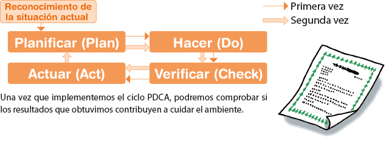

Programa Kids’ ISO 14000
¿Qué es ISO?
ISO es la Organización Internacional de Normalización. Desarrolla normas internacionales, brindando especificaciones actualizadas para productos, servicios y buenas prácticas.
En el caso de la Norma Internacional ISO 14001, se establecen los requisitos para que una organización pueda desarrollar y llevar a cabo proyectos que tengan en cuenta el cuidado ambiental.
IRAM – Instituto Argentino de Normalización y Certificación – es miembro de ISO y su único representante autorizado en la Argentina.
Programa Kids’ ISO 14000
Es un Programa de Educación Ambiental, basado en las normas ISO 14001, en el cual los niños son los líderes que toman la iniciativa, planificando y poniendo en práctica junto a su familia sus estrategias para el cuidado del ambiente.
Vamos a conocer una nueva forma de implementar un proyecto:
Planificar (P), Hacer (D), Verificar (C), Actuar (A)
La Norma Internacional ISO 14001 se basa en la metodología de la mejora continua en base al ciclo conocido como Planificar–Hacer–Verificar–Actuar (Ciclo PDCA por sus siglas en inglés). Siguiendo este ciclo, se podrá ver la eficacia de nuestras acciones.
